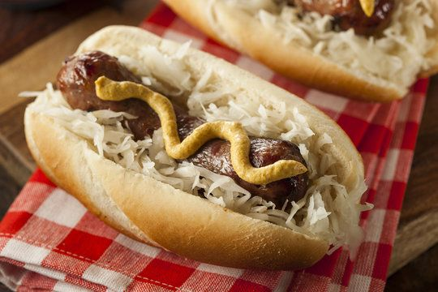

Bratwurst

Description
Have you ever thought to yourself "hotdogs are awesome but I wish they were somehow even awesomer..."? Me neither! But someone else did and now you're about to learn all about how to make the bratwurst!
Ingredients
- Bratwurst sausage.
- Hotdog bun (or any bun of your choice).
- Sauerkraut.
- Mustard.
Steps
- Put your bratwurst sausage on the grill.
- Let the sausage cook evenly on both sides, flip it every few minutes to check how each side is doing.
- Once the sausage appears to be cooked, take it off the grill and put it in your hotdog bun.
- Finally, top with the desired amount of sauerkraut and mustard.
Home